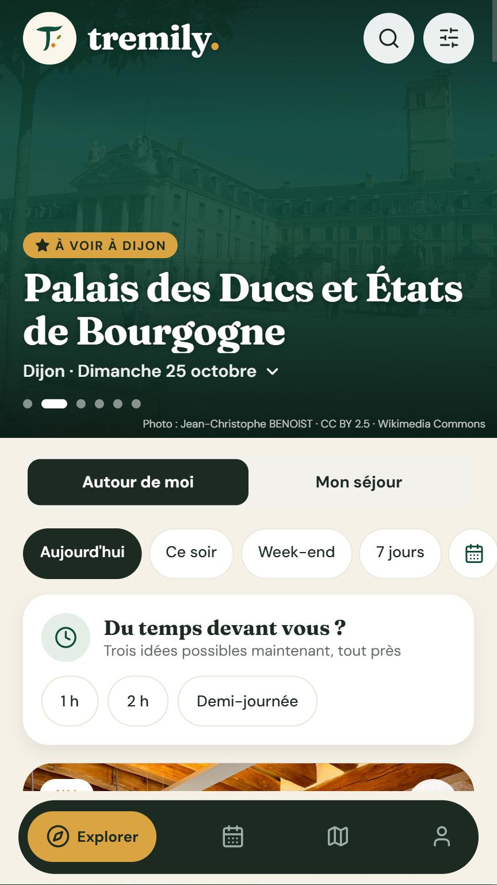
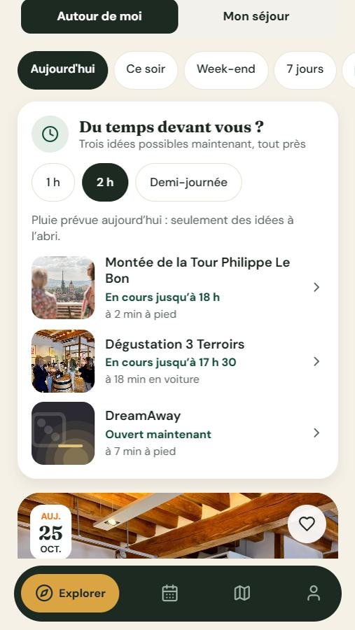

Ne ratez plus rien autour de vous
Tout ce qui se passe et tout ce qu’il y a à voir, là où vous êtes ou là où vous partez : concerts, brocantes, musées, parcs, et même le tournoi de pétanque du quartier. Réuni dans une seule application, quel que soit votre budget.


Ce que fait Tremily
Que vous habitiez la ville, que vous y arriviez pour vos études ou que vous y passiez vos vacances.
Ce qui se passe, tout de suite
Concerts, spectacles, fêtes, marchés, expositions, cinéma, et les petits rendez-vous du quartier.
Les lieux à voir
Monuments, musées, parcs, lacs, points de vue, avec leurs vraies photos.
Du temps devant vous ?
1 h, 2 h ou une demi-journée : trois idées réellement possibles maintenant, à l’abri s’il pleut.
Mon séjour
Choisissez vos dates et placez chaque sortie au jour et à l’heure voulus, sur plusieurs jours.
À plusieurs
Partagez votre séjour avec la famille ou les amis : chacun peut ajouter ou modifier une sortie.
Des informations vérifiées
Jamais la photo d’un autre lieu, et la source de chaque fiche est indiquée.
L’accessibilité d’abord
Tremily est pensée dès le départ pour les personnes aveugles, malvoyantes, sourdes, malentendantes ou en fauteuil.
- Lecteur d’écranToute l’application fonctionne avec TalkBack, et chaque fiche peut être lue à voix haute.
- Sourds et malentendantsSéances sous-titrées, boucles magnétiques signalées.
- Aveugles et malvoyantsAudiodescription au cinéma, lieux labellisés Tourisme & Handicap.
- En fauteuilAccès et équipements de chaque lieu, d’après Acceslibre.
Pour qui ?
Pour tout le monde, à égalité.
- Gratuite
- Sans publicité
- Sans pisteur publicitaire
- Utilisable sans compte
Pour les professionnels
Tremily aide aussi ceux qui organisent et ceux qui informent.
Entreprises
Séminaires et sorties d’équipe préparés pour vous : salles de réunion, activités, repas et hôtels, partout en France, pour 2 à 2000 personnes.
Demander un devis →Mairies, associations, organisateurs
Faites connaître vos événements, même les plus petits, aux habitants et aux visiteurs.
Nous écrire →Envie d’essayer Tremily ?
L’application est en test sur Android. Écrivez-nous pour être prévenu de sa sortie ou pour faire partie des testeurs.